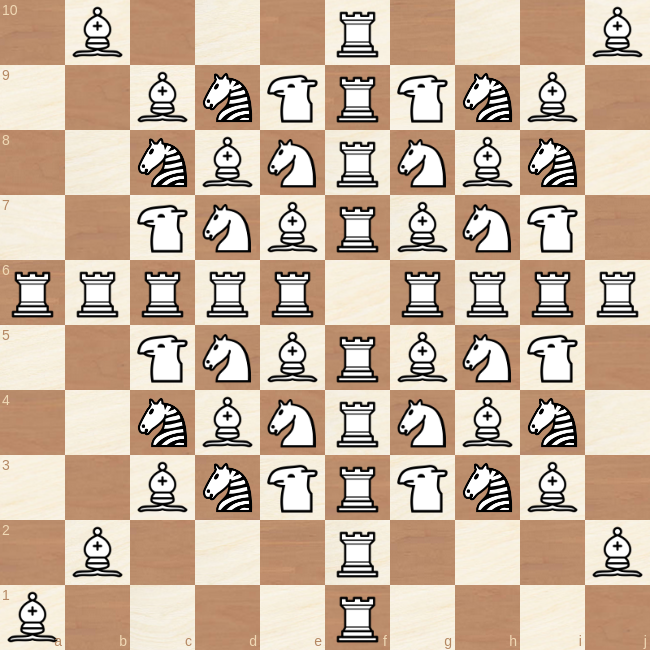
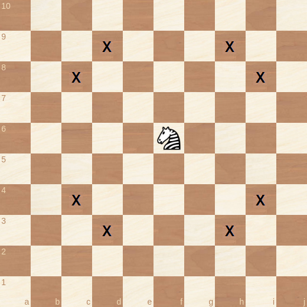
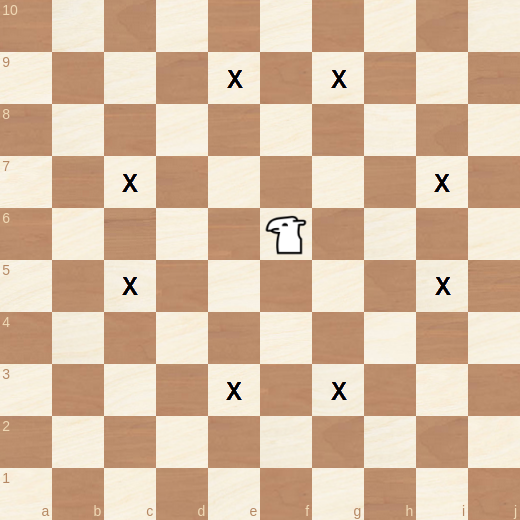
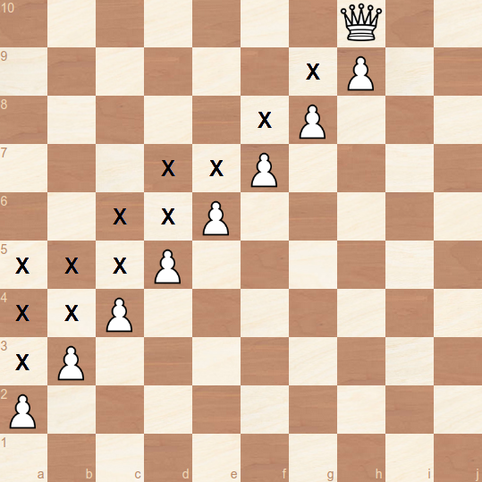
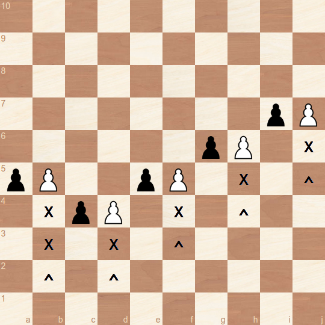
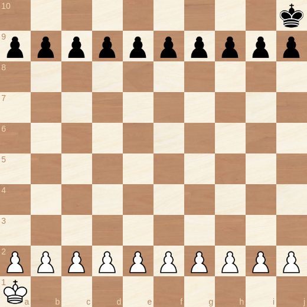
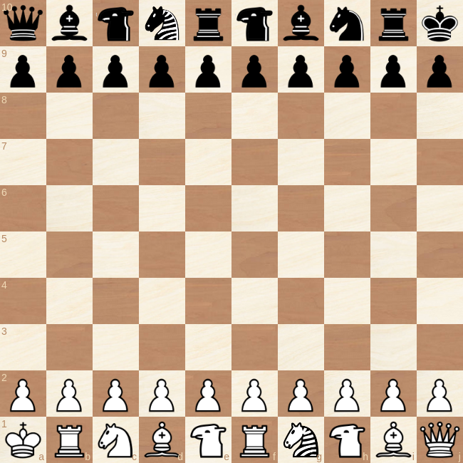
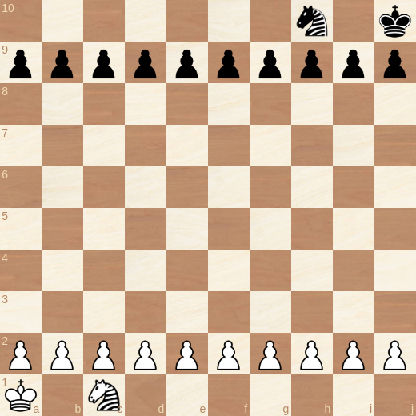

Wing Kings
Classic Vibe. New Adventures.
A plausible 10x10 chess version featuring an explosive alternative to the castling rule that promotes razor sharp play.
Board
The board is extended to 100 (10x10) squares. The files are labeled with the letters a-j, the ranks with the numbers 1-10. The lower right square of the board is black.
The Knight Gets New Friends
Wing Kings adds two new members to the team, the camel and the zebra. Especially the camel is known to be a very old piece which has already been used in the medieval Tamerlane Chess. Both pieces have a worth and abilities similar to the knight, but with a different set of target squares.
While the knight reaches all squares in a two square distance that cannot be reached by rook or bishop, camel & zebra have similar abilities for the squares in a three square distance. Both pieces are leapers. The camel is color-bound like the bishop, the zebra is not. The following diagram shows how they fit the picture:

Or in separate diagrams:


This results in six complementary minor pieces, each of them targeting an exclusive set of squares that none of the other five pieces can reach.
Pawns
They can move up to three steps forward when placed on the initial square.
Up to two steps forward when placed on the third, fourth or fifth rank.
One step forward when placed on the sixth rank or higher.
This means a pawn can reach the promotion field within five moves, which is the same number of moves as in classical chess:

En passant capturing is possible each time a pawn passes an enemy pawn by moving more than one square forward in one move:

Setup
The castling rule is replaced by the rule that kings are always start in diametrical opposition at the corners of the board.

The remaining pieces are randomly placed. A sample:

For offline play without a dice the following placement rules can be applied:
Black starts the placement phase by positioning the first piece. The same piece is automatically placed then on the corresponding square on White's backrank.

Players now take turns until all pieces are placed.
Bishops & camels have to occupy different square colors (obviously). To minimize referee calls, the following
! special rule is added: Amongst the first six pieces placed must be both bishops and camels.
After the the setup is complete, the game starts with White's first move.
Notes
Some background information regarding the game design. If you are a non-academic and only needed the rules, you can skip here.
Wing Kings incorporates the following design elements:
- Two single pieces: The key piece and the strongest piece. The latter has the same move pattern as the key piece but with unlimited range.
- Six distinct minor pieces, each of them unique in its moving abilities.
- Two rooks.
- Pieces with ambiguous routes to their destination squares (camel, knight, zebra) can move directly to these squares regardless if one or all routes are blocked.
- Pawns get slower once they pass a certain rank number.
- All pieces can be developed by moving only the two central pawns.
- Its played on a square board.
Some estimations regarding the game dynamics:
Upvaluing the pawns by making them faster seemed necessary to keep the spirit of the original game that includes fast confrontation and a broad spectrum of possibilities for piece sacrifices.
Adding minor pieces instead of heavy ones like the two pieces that are mostly used for a 10x board - the chancellor and the archhbishop - helps keeping the subtility of the original game.
Interestingly, some endgame tests with Fairy Stockfish revealed that the camel might nevertheless be worth slightly more than the zebra, since it reaches on average more squares. For the same reason the knight might worth more than zebra and at least worth as much as camel. Does the average numbers of available squares beat range?
10x10 should faciliate gambits and sacrifices in general, since one pawn unit represents a lower fraction of the complete material stock.
Chances for an asymmetrical material distribution - one of the most tension creating features in classsical chess - are increased as well.
The knight obviously suffers from longer routes on the bigger board, but controls on average more squares than in classical chess.
The king might be the only piece that is less powerful on the bigger board.
As a mere view on the setup suggests, Wing Kings promotes a playing style that prefers energy over matter - and goes hand in hand with a much stronger focus on the king. The audience will like it 💥
Placing the kings in diametral opposition is a very natural alternative to the castling rule and provides its benefits - improved king safety and piece coordination - while creationg tension right from the start.
This king setup also much better suited to avoid "trash positions" when shuffling the pieces for the start position - as it happens regularly in Chess960.
History
Before developing a chess version for the 10x10 board, I experimented with a point symmetric setup for the 8x8 board. Engines can play this out of the box without reconfiguration. You still can find sample games on chess360.net.
The 8x8 version with the kings placed on h1 and a8 is described as Corner Chess or Kings Corner Chess on several websites.
The big board concept was developed by me and derived from first principles. However, most elements are (obviously) not new, only the combination is. See the links below for some similar variants.
The 3, 2, 1, 1, 1 pawn movement might be a completely new approach.
Links
Tamerlane Chess (medieval)
Wildebeest Chess (1992)
Modern Kamil (2002)
Devingt Chess (2005)
The camel on chessvariants.com
The zebra on chessvariants.com
Reddit: Why is the (2,3) leaper named "Zebra"?
Lawyers
Game rules, as abstract ideas or methods of organizing human activity, are generally not eligible for copyright protection or patents.* And chess is for the community anyway. So just for clarification:
Wing Kings is common heritage of mankind, as chess is. So use it as you want. But I don't complain if you give credit to the author 🗿.
------------------------------
By
Ulrich Schwekendiek
Berlin
broullis@gmx.com
2024
* However, copyright applies to a specific verbalization of the game rules, which is considered to be a literary work. So, if you use this paper without major modifications, you should put my name under it. Thank you ❤️